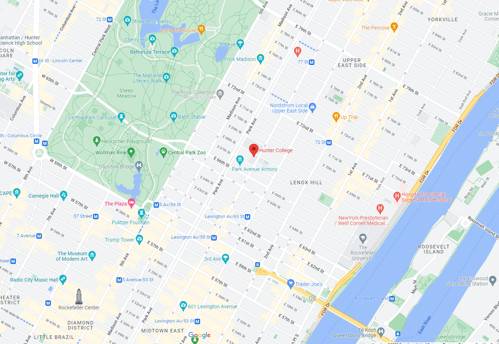

University I'm Currently Attending.
Bachelor of Science in Computer Science
Hunter College
August 2020 - May 2024
695 Park Ave, New York, NY 10065
Advanced Regents Diploma
Brooklyn Tech
September 2016 - June 2020
29 Fort Greene Pl, Brooklyn, NY 11217
Some of my Hobbies.
Guitar
I picked up an electric guitar a few months ago and I love it. I listen to mostly R&B music, so playing a crispy chord with lots of reverb releases an unhealthy amount of seratonin.
Gaming
Video Games are my go-to, and I've become pretty decent at most of the ones I play. Strategy Games, team Games, shooters, even Chess! Nothing is more fun than queuing up with friends and winning together.
Friends
Although it's not a hobby, I like hanging out with my friends. Staying home, ordering delivery, and watching a movie is one of life's hidden gems.